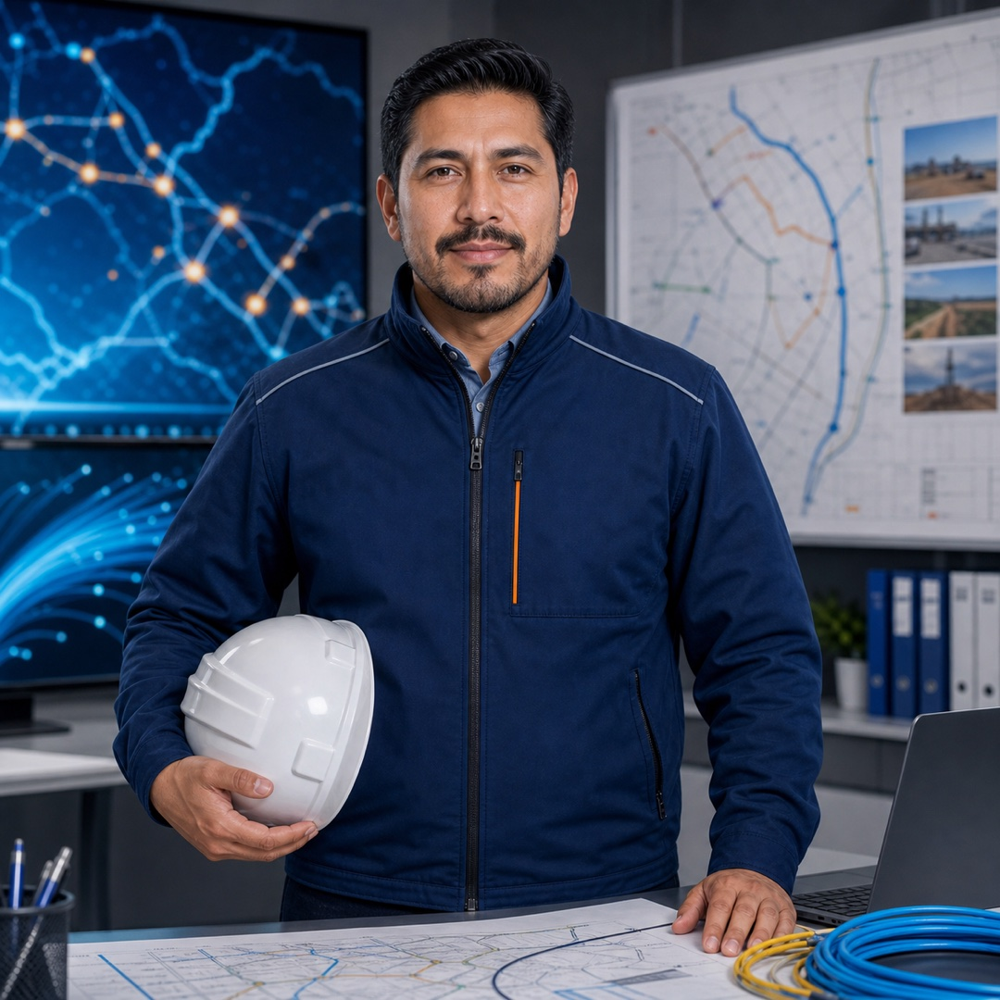
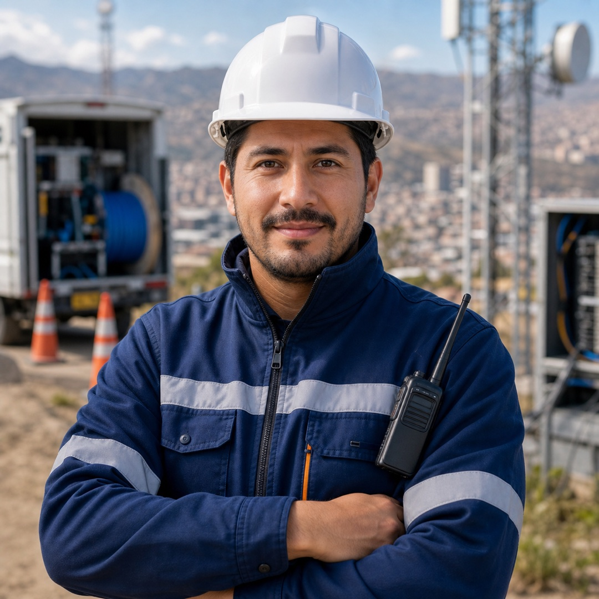
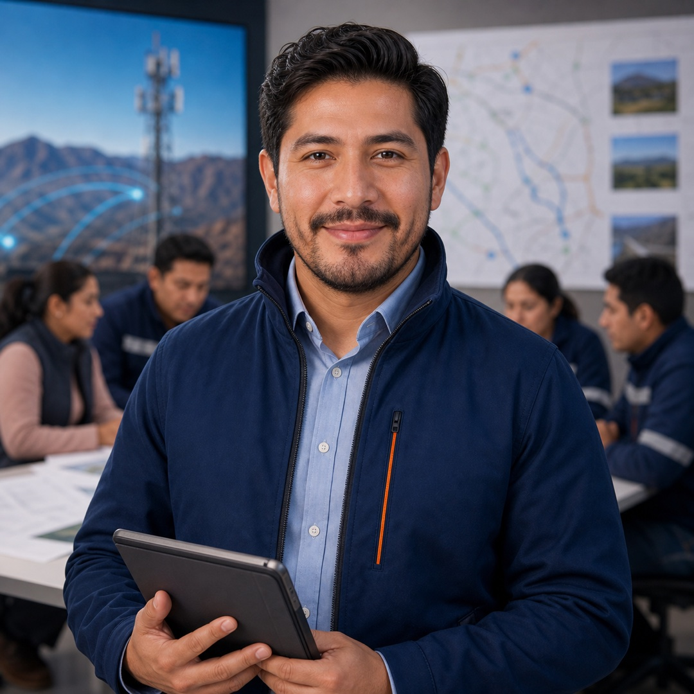

Misión
Construir infraestructura útil y confiable
Desarrollar soluciones civiles y de telecomunicaciones con atención a la seguridad, la calidad y las necesidades de operación del cliente.
Quiénes somos · Desde 2015
Capacidad técnica y trabajo en campo para la infraestructura que conecta Bolivia. Acompañamos a empresas y operadores en obras civiles, redes de fibra óptica y sitios de telecomunicaciones.
Conocer nuestras capacidadesSocio de ejecución
Somos una empresa boliviana creada en 2015, con experiencia de trabajo con ENTEL y disponibilidad para evaluar proyectos en todo el país.
Integramos preparación civil, despliegue de redes y coordinación técnica. Cada requerimiento se define según ubicación, condiciones de acceso, alcance y criterios de entrega.

Misión
Desarrollar soluciones civiles y de telecomunicaciones con atención a la seguridad, la calidad y las necesidades de operación del cliente.
Visión
Consolidar relaciones de largo plazo con empresas y operadores mediante ejecución responsable, comunicación clara y capacidad técnica.
Capacidades integradas
Obra civil, instalación y soporte técnico coordinados alrededor del alcance de tu proyecto.


Infraestructura que acerca internet y servicios digitales a las comunidades.
Consultar alcanceImágenes ilustrativas generadas con IA.
16 especialidades
El alcance final y los recursos se acuerdan con el cliente según las condiciones del proyecto.
Construcción de canalizaciones, cámaras, bases y adecuaciones para alojar infraestructura de red.
Tendido y organización de enlaces para conectar ciudades, instalaciones y rutas.
Montaje, adecuación y soporte de sitios técnicos según el alcance acordado.
Inspección preventiva y correctiva de ductos, empalmes y puntos críticos de red.
Planificación de frentes, supervisión, reportes de avance y coordinación del cierre.
Infraestructura que facilita el acceso a internet y a servicios digitales.
Planificación de accesos, cuadrillas, herramientas y materiales para cada ubicación.
Organización de evidencias, observaciones y documentación de entrega.
Preparación de rutas, cruces, protecciones y detalles civiles para el despliegue.
Organización de conexiones, comprobación de continuidad y mediciones de fibra.
Revisión de accesos, estructuras, soportes y condiciones previas de intervención.
Señalización, protección personal y coordinación de riesgos durante los trabajos.
Seguimiento de criterios de aceptación, observaciones y correcciones.
Comunicación con actores locales y coordinación de accesos y entorno.
Evaluación de puntos críticos y ventanas de trabajo según necesidades del operador.
Revisión de necesidades, información disponible y alcance preliminar del requerimiento.


Nuestra trayectoria
Inicio de la empresa boliviana de obras civiles y telecomunicaciones.
Instalación de fibra óptica que ayudó a la comunidad a acceder a internet. Año de ejecución por confirmar.
Conocer el proyectoEvaluación de requerimientos de empresas y operadores en los nueve departamentos de Bolivia.
Organización del trabajo
Dirección técnica, operaciones y atención al cliente articulan la preparación y el seguimiento de cada requerimiento.

Alcance, criterios de aceptación y coordinación de ingeniería.

Planificación de recursos, logística y seguimiento en campo.

Coordinación de requerimientos y comunicación durante el proyecto.
Retratos ilustrativos generados con IA; no representan a personas identificadas del equipo.
Valores
Protección personal, orden de trabajo y evaluación de riesgos.
Verificaciones y documentación según el alcance acordado.
Comunicación clara de condiciones, avances y observaciones.
Respeto por las comunidades y los entornos de ejecución.
Tu próximo proyecto
Prepara ubicación, servicio requerido, plazo y antecedentes disponibles para iniciar la evaluación.